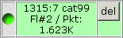
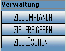

Diese Übersicht kann von allen Spielern eingesehen werden.
Je nach dem, für welchen Bereich der ATT eingeplant wurde, sind die Ziele
sichtbar!
|
|
||
| In der Liste find nachfolgende Informationen: | ||
| Das Ziel: |
Unter Ziel befinden sich die wichtigsten Informationen, wie
der Sektor, Username, Scans, Exxen, Punkte, Deff und die Schiffsanzahl |
|
| Die Planungsdaten: |
Hier befindet sich das Datum und die Uhrzeit für den Angriff. Darunter befindet sich der aktuelle Status des ATT:
Die Farbe der Zeile von dem jeweiligen ATT wird auch farblich entsprechende des Status angezeigt! |
|
| Eingecheckte Flotten: |
 |
In diesem Bereich sind alle Flotten sichtbar, die sich für diesen
ATT eingecheckt haben. Dieses sollte immer verbindlich sein!! Im unteren Bereich werden die Punkte (aus dem TIC) aufsummiert und die max. Angriffspunktzahl angezeigt. Damit kann überprüft werden, ab wann das Ziel überbucht ist! Wenn die Flotte gestartet ist, dann wird zusätzlich noch die ETA angezeigt! Mit der DEL Taste kann der Spieler seine eingecheckten Flotten wieder entfernen. |
| Der Flottenstatus: |
Vor jeder Flotte ist ein Punkt. Dieser Punkt zeigt automatisch den Flug - Status der Flotte an:
Der Status wird automatisch anhand der Flugbewegungen im TIC ermittelt und angezeigt! |
|
| Information: | Freier Text, welcher vom ATT-Planer erfasst werden kann | |
| Funktion: |  |
In der Funktion kann
|
| Verwaltung: |
 |
In der Verwaltung kann der berechtigte ATT-Planer folgende
Funktionen ausführen:
|